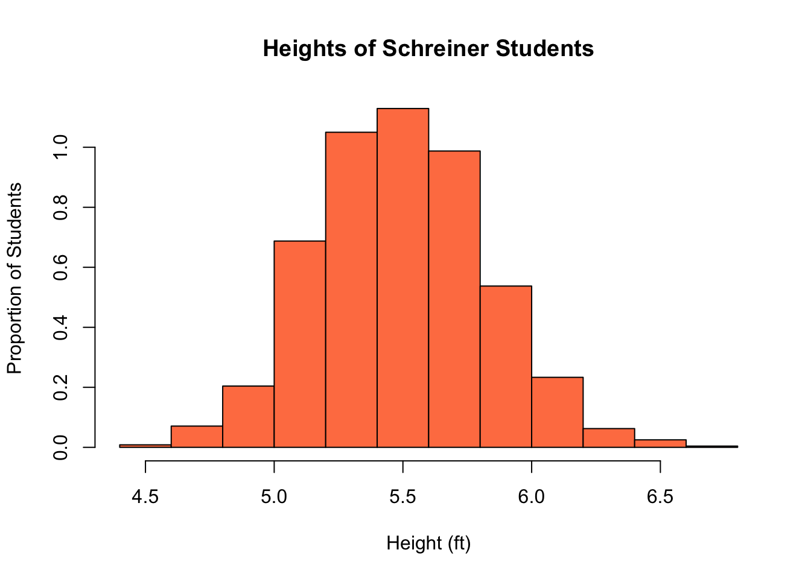
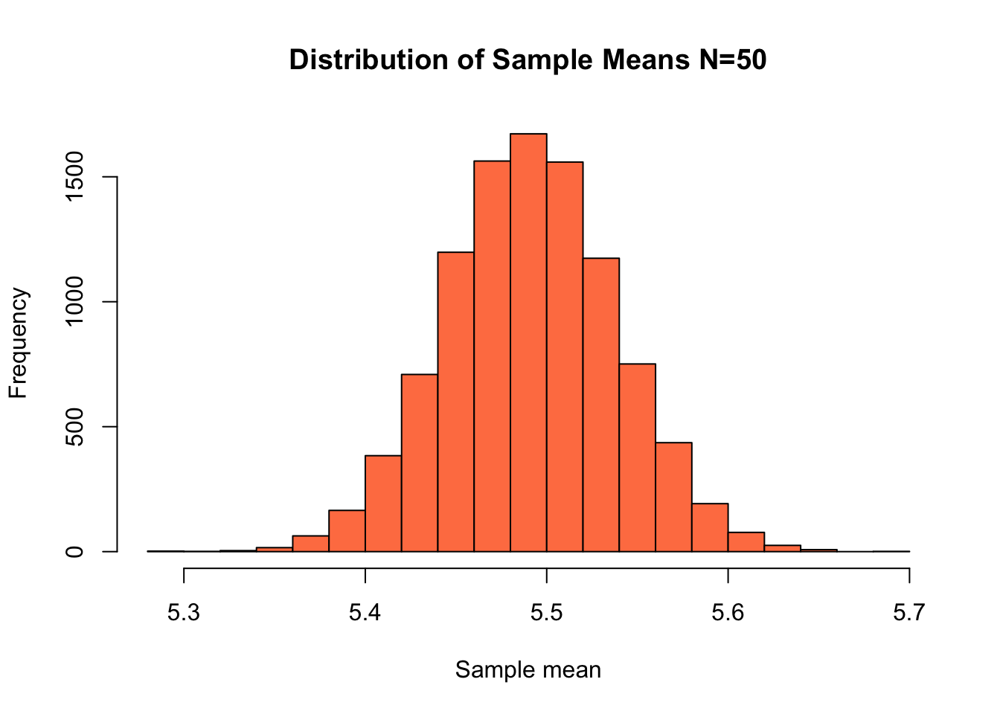
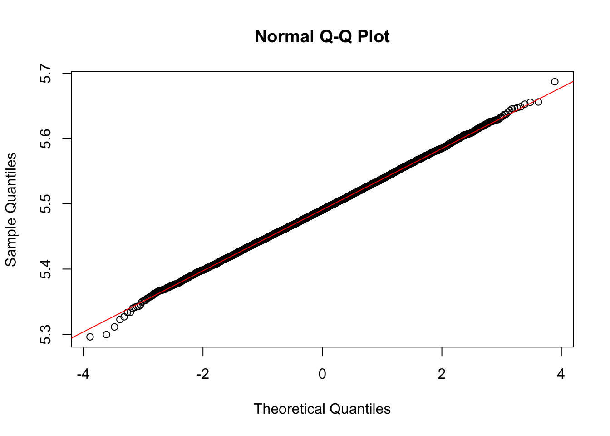
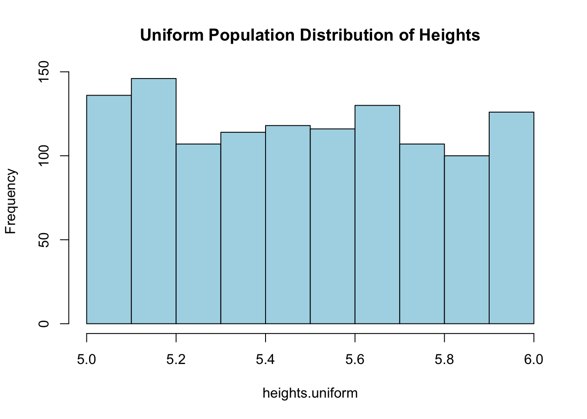
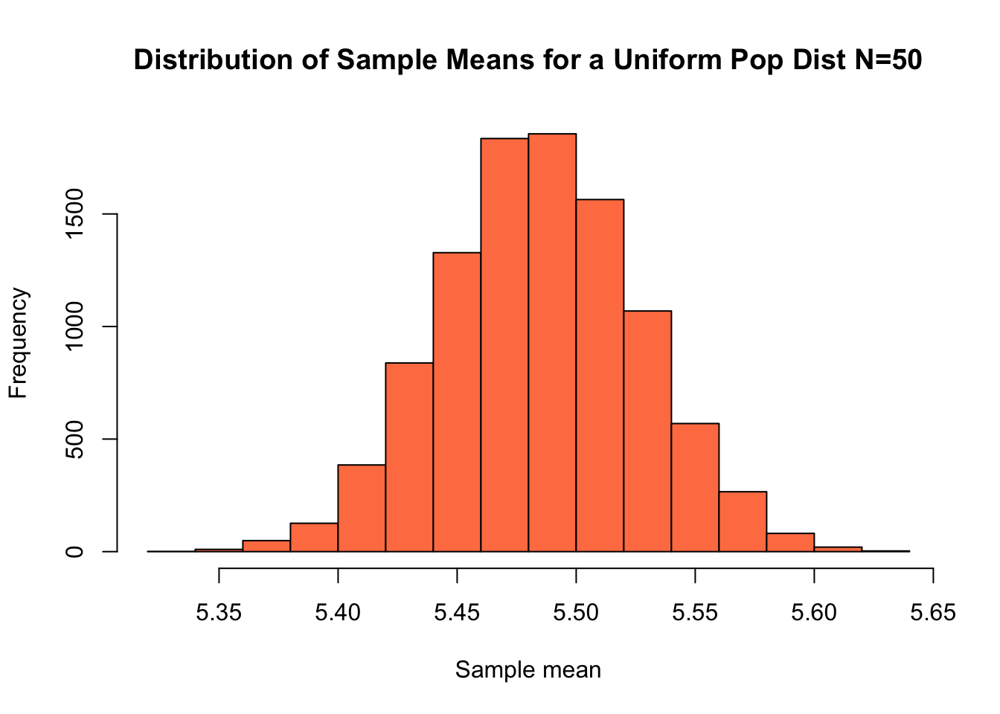
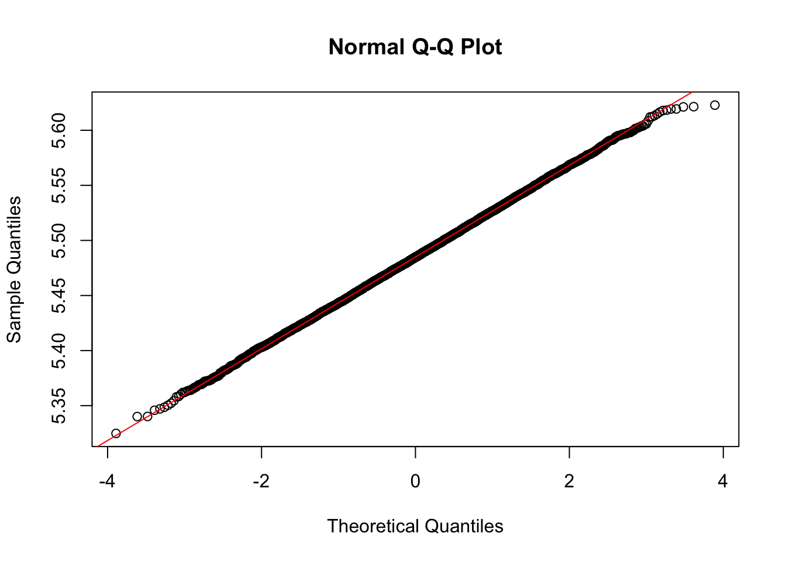
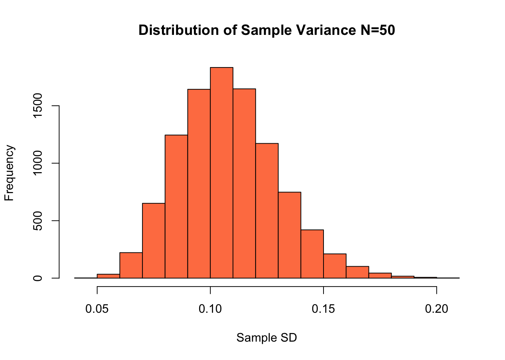
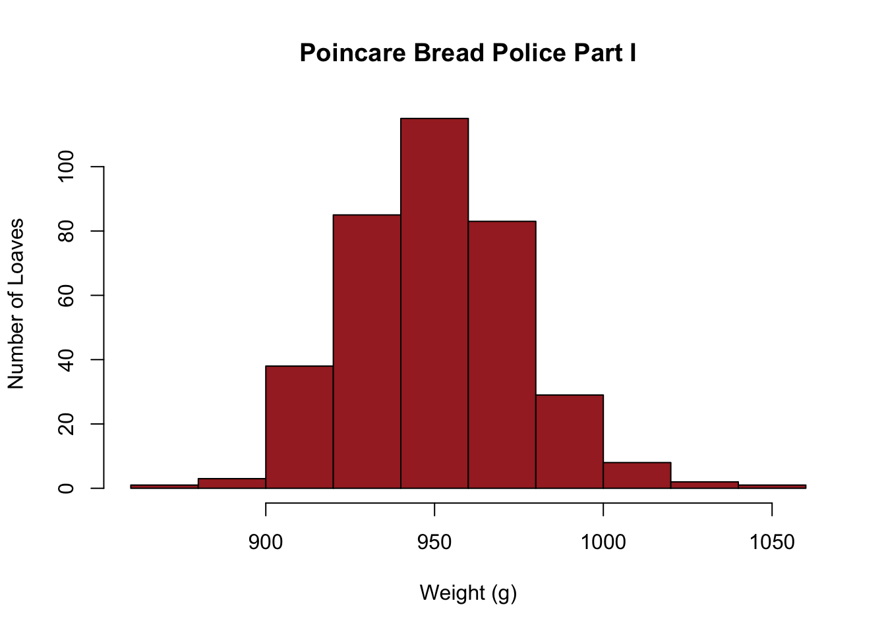
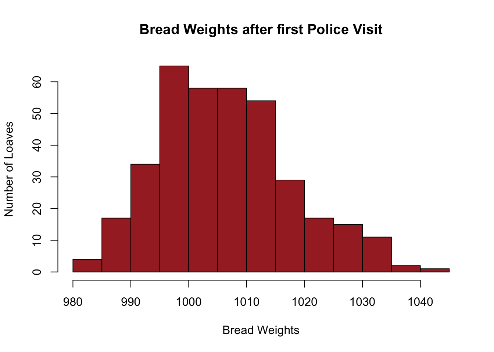

Chapter 9 Introduction to Sampling Distributions
9.1 Why Sample?
We have learned about the properties of probability distributions such as the Normal Distribution. Up until now we assumed we are given a probability distribution and learned how we can extract information from knowledge of the distribution. For example, given that a process follows a binomial distribution how can we calculate the mean? This is probability theory.
Now we are going to start learning Statistics where we are concerned with estimation of parameters from random samples.
Example: Lets say we want to estimate the mean height of Schreiner students. Heights follow some distribution function, so one way to do this would be to collect the heights of every Schreiner students and take the average of this list to get an answer. This approach has the advantage of giving an exact answer. However, collecting all that information would be a huge investment of time.
For the Schreiner heights example it would be a hassle to collect all the data. In other situations it may be practically impossible to collect all that information. Imagine a medical study where instead of asking someone how tall they are you have to pay them \(30,000\) dollars to participate in a drug trial. No way the drug company is going to pay everyone in the United States to take a drug, or even everyone at Schreiner.
Collecting information is both expensive and time-consuming so we need a better approach.
9.1.1 Average Height Example
To illustrate the idea behind sampling lets imagine we did ask every student their height. To simulate this process I create a list of random height values which is 1200 students long. We can then find the average value of the list to get an exact answer for the average height of Schreiner students.
heights <- rnorm(1200, mean = 5.5, sd = 4/12)
mean(heights)## [1] 5.491722Thus we find that average height of Schreiner students is exactly 5.4917215 feet. We can also make a histogram our our fake height data for Schreiner students.
hist(heights, col = "coral", main = "Heights of Schreiner Students", ylab = "Proportion of Students",
xlab = "Height (ft)", freq = FALSE)
But lets say that I also gave the task of finding the average height to a lazy person (not an Applied Stats student, but maybe after this lesson). They start going around to ask everybody their heights, but get bored and quit after only asking \(N\) number of people. When it comes time to report the answer they panic and just average up the people they did ask and turn that in.
How wrong would they be? We can examine this using the sample() command in R. The below command simulates us randomly choosing \(N\) people, recording their heights, and then averaging.
N=50; ##The number of people they ask before quitting
mean(sample(heights, replace=FALSE, size=N)) ##the panic answer## [1] 5.48426A very important point is that if we did this again we would get a slightly different answer this time:
mean(sample(heights, replace = FALSE, size = N))## [1] 5.536182The answer we get if we quit early will depend on who exactly we asked. For example, if we happened to run into the basketball team and recorded their heights and then quit we would end up with a very wrong answer for the mean height of a Schreiner student! However, notice that if we choose only \(50\) students at random above we get an answer which is pretty close to the exact answer 5.4917215 we would find if we went to the trouble of asking every single student on campus their height.
9.1.1.1 Analysis
Wow that is not so bad! Unless they are very unlucky they can give a pretty good answer after only doing a fraction of the work. Note however that every time we run the lazy person sample it changes a little bit. This has to do with the order that they ask people in. If they just so happen to ask a few tall people first and then quit the answer can be farther off. However, if they keep asking people this bad luck will be balanced out fairly quickly.
9.1.1.2 Why does this work?
First, notice that their is something magical about the mean. Lets say I have asked 100 students and have an estimate of 5.4 feet for the average height. If we let \(h_1, h_2,...h_{100}\) be the heights then we can write this as: \[s_{100}=\frac{h_1+h_2+...+h_{100}}{100}=5.40\]
I decide to quit, but as I am walking back to my dorm I pass one more person and decide to collect their height as well. It just so happens to be Kevin Durant (a professional basketball player) who is 7 feet tall. If I include him in my sample how does that effect it?
\[s_{101}=\frac{h_1+h_2+...+h_{100}+7.0}{101}=\frac{100}{101}\left(\frac{h_1+h_2+...+h_{100}}{100}+\frac{7.0}{100}\right)=0.990(s_{100}+0.07)=5.4158\]
So adding a 7 foot person to your sample only changes it by less than \(0.02\) feet. This is because we divided the 7.0 number by the number of samples. It is hard to change the average value after the sample size is large enough. It is resistant to random effects when the sample size is large.
Note, this is our friend the Law of Large Numbers again. Since we are looking for the expected value (average) of the sample we expect this value to become more predictable as we increase the number of people included in the sample.
9.2 Inferences and Point Estimators
We have seen that it is possible to make some inference about the average height of Schreiner students from a sample taken from the whole student body. We expect this value to be vary slightly with the sample we take.
In more general terms we are trying to make an inference about the mean of the population distribution. We call the true probability distribution the population distribution. The population distribution for the heights example was shown in our first histogram where we asked every student their height:
hist(heights, col = "coral", main = "Heights of Schreiner Students", ylab = "Proportion of Students",
xlab = "Height (ft)", freq = FALSE) As noted the population distribution is often unobtainable in a practical sense but as the height example shows we may be able to get an idea of its properties by sampling from it. We hope to infer properties of the whole population from a relatively small sample. The process we are engaged in is called statistical inference.
In many practical cases we may be interested in estimating some descriptive statistic, instead of the entire population distribution function. For example, we have seen an example where we were looking for an estimate of the mean of the height distribution. We didn’t have to turn in all our height measurements, just the average of them, if you had to turn-in the whole list it would be more obvious who had been lazy and only asked a few people.
When we are only interested in a single number (mean, variance, median, etc) then we are talking about a point estimator \(\hat{\theta}\). If we had been looking for the median height of Schreiner students we might have used the median of our sample to estimate the population median. It is vital to understand that a point estimator \(\hat{\theta}\) is a random variable, because each time we collect a sample we will get a slightly different answer. The population parameter we are trying to estimate \(\theta\) is NOT a random variable, but a fixed value we are trying to estimate. There is an average height of Schreiner student!
Since \(\hat{\theta}\) is a random variable we can use probability theory to analyze its properties.
9.3 The Distribution of Sample Means
We are now ready to use probability theory to analyze the properties of the point estimator \(\hat{\theta}\) random variables. We will focus on a the special point estimator \(\bar{X}\) which uses the sample mean to form an estimate for the population mean. The random sample and then average procedure we have been using can be written in terms of random variables. \[\bar{X}=\frac{1}{N} \sum_{j=1}^N X_j.\] Here \(\bar{X}\) is the random variable describing the outcomes from sampling \(N\) values from a population which follows the random variable \(X_j\). Each of the random variables \(X_j\) are independent and identically distributed. For the heights of Schreiner students example, each \(X_j\) is the height of a randomly chosen student.
Since \(\bar{X}\) is defined as the sum of random variables we can use our property of expected values \(E[aX+bY]=aE[X]+E[Y]\) to find the expected value of the random variable \(\bar{X}\). In particular we have that, \[E[\bar{X}]=E\left[\frac{1}{N} \sum_{j=1}^N X_j \right]=\frac{1}{N}\sum_{j=1}^N E[X_j]=\frac{N \mu}{N}=\mu.\] Where \(\mu\) is the population mean. If the expected value of the point estimator \(\hat{\theta}\) equals the population parameter it is trying to estimate \(E[\hat{\theta}]=\theta\) we say that the estimator is an unbiased estimator for \(\theta\). In turn if an estimator does not have this property we say that the estimator is biased.
Another important property of a statistical estimator is the variance of the sampling distribution. This measures how variable the answers will be depending on the random sample we take from the population distribution. For the sample mean estimator \(\bar{X}\) we can find the variance of our random sample using the properties \(Var(aX+bY)=a^2 Var(X)+b^2Var(Y)\) for independent random variables \(X\) and \(Y\). \[\begin{align} &Var(\bar{X})=\sigma^2_{\bar{X}}=Var\left[\frac{1}{N} \sum_{j=1}^N X_j \right]=\frac{1}{N^2}\sum_{j=1}^N Var[X_j]=\frac{N \sigma^2}{N^2}=\frac{\sigma^2}{N} \\ & \sigma_{\bar{X}}=\frac{\sigma}{\sqrt{N}} \end{align}\] The standard deviation of the point estimator is called the standard error of the estimator \(\sigma_{\bar{X}}\). Notice that no matter how large the population standard deviation \(\sigma\) is, the standard error of the sample mean estimator goes to zero as the sample size goes to infinity. Therefore, if we take large enough samples the sample mean will become very close to the population mean.
sample.size <- 50
store <- replicate(10000, mean(sample(heights, size = sample.size, replace = TRUE)))
hist(store, col = "coral", xlab = "Sample mean", main = "Distribution of Sample Means N=50")
The standard deviation of this distribution is \(\sigma_{\bar{X}}=\)0.0468746 found through simulation above. If we used our formula for the standard error we get \[\sigma_{\bar{X}}=\frac{\sigma}{\sqrt{N}}=\frac{4/12}{\sqrt{50}}=0.047\]
Thus our random sampling will produce a very accurate and consistent answer for the population mean if we only ask 50 out of the roughly 1200 students are Schreiner!
It is very important to remember that our formula for the standard error for the sample mean point estimator ONLY applies if we take a truly random sample, where each data point is exactly independent of all the others. If we did our “random” sample by standing outside the gym after basketball practice gets out we will get much,much worse results.
Exercise 9.1 What is the standard error for our height sampling problem if we ask 100 randomly chosen students?
Exercise 9.2 How many samples should I take if I want to \(\sigma_{\bar{X}}<0.01\), if I am sampling from a population with \(\sigma=1\)?
Exercise 9.3 Do the above results depend on the distribution of the random variables \(X_j\)?
9.4 Distribution of Sample Means
You may notice that our distribution of sample means above looks suspiciously like a normal distribution. Lets investigate this will our tools for assessing normality learned in the last chapter. We have already made a histogram and it looks like a normal distribution to me, so we proceed to step 2:
IQR(store)/sd(store)## [1] 1.346072This is close to the target value of 1.3. To finish we will make a QQ plot of our distribution of sample means:
qqnorm(store)
qqline(store, col = "red")
This plot shows that the distribution of sample means is very well approximated by a normal distribution. It turns out this will be true whenever the population distribution follows a normal distribution \(N(\mu, \sigma)\), the distribution of sample means will also follow a normal distribution with the same mean \(\mu\) and a standard deviation which decreases with the sample size \(N(\mu, \sigma/\sqrt{N})\). We can use this information to calculate the probability of obtaining results in our sampling. For example, the odds that we ask 50 random Schreiner students their heights and our sample mean is less than 5.3 is given by:
m <- mean(heights) ##mu the population mean
my.sd = sd(heights)/sqrt(50) ##the standard deviation of sample means, with sample size 50
pnorm(5.4, mean = m, sd = my.sd)## [1] 0.024082099.4.1 The Central Limit Theorem
What if the population distribution we are sampling from is NOT a normal distribution? Can we say anything about the distribution of sample means in that case?
To investigate this lets create a population of heights which is uniform.
heights.uniform <- runif(1200, min = 5, max = 6)
hist(heights.uniform, col = "lightblue", main = "Uniform Population Distribution of Heights")
Just like before we could simulate asking 50 students their heights and then averaging using the sample command.
mean(sample(heights.uniform, size = 50))## [1] 5.471628Each time we do this we would get a slightly different answer:
mean(sample(heights.uniform, size = 50))## [1] 5.496113If we imagine repeating this experiment many times, asking 50 random students their heights and then averaging, we can get an idea of the distribution of sample means.
sample.size <- 50
sample.uniform <- replicate(10000, mean(sample(heights.uniform, size = sample.size,
replace = TRUE)))
hist(sample.uniform, col = "coral", xlab = "Sample mean", main = "Distribution of Sample Means for a Uniform Pop Dist N=50")
Surprisingly this looks a lot like a Normal distribution!. Lets investigate this further:
IQR(sample.uniform)/sd(sample.uniform)## [1] 1.355248This is relatively close to the Normal distribution value of 1.3. So we proceed to make a QQ plot:
qqnorm(sample.uniform)
qqline(sample.uniform, col = "red")
Thus our sampling distribution is well approximated by a normal distribution. This result is known as the central limit theorem.
Theorem 9.1 (Central Limit Theorem) Consider a random sample of \(n\) observations selected from a population (any population) with a mean \(\mu\) and standard deviation \(\sigma\). Then when \(n\) is sufficiently large the sampling distribution of \(\bar{x}\) for the sample mean will be approximately normal with mean \(\mu\) and standard deviation \(\sigma_{\bar{x}}=\frac{\sigma}{\sqrt{n}}\). The larger the sample size the better the normal approximation will become.
Key Points
- This is the most powerful tool in statistics.
- Notice that sufficiently large is purposely vague in the statement. It will vary with how bizarre our population distribution may be. A rule of thumb is that a sample size of \(n\geq 30\) is generally enough for the CLT to provide an accurate answer.
- The CLT applies only to the sampling distribution of sample means. If we want to estimate the median, variance, IQR, etc of the population we can’t use the CLT.
Exercise 9.4 Repeat the above analysis for estimating the mean value of a uniform population, using a sample size of only 10. Does the sample mean distribution pass the evaluations for normality in this case?
Exercise 9.5 If we randomly sample 36 data points from a population which has a mean \(\mu=0\) and a standard deviation of \(\sigma=3.0\). Estimate the probability that we get a sample mean greater than 7, i.e. \(\mathbb{P}(\bar{X}>7)\)
9.5 Other Point Estimators
We have focused mainly on the point estimator for the sample mean. This is because we can find a formula for the standard error and expected value for that point estimator. Additionally, we have the power of the central limit theorem at our disposal. However, let us not forget that many other interesting point estimators \(\hat{\theta}\) exist. For example, if we wanted to estimate the variance of the heights of Schreiner students, we could randomly sample the heights and estimate the population variance using this sample variance.
var(sample(heights, size = 50))## [1] 0.09775346If we do this again we will get a slightly different answer:
var(sample(heights, size = 50))## [1] 0.1055983If we do this many times we can get a distribution of sample variances, which we can plot as a histogram:
sample.size <- 50
store.var <- replicate(10000, var(sample(heights, size = sample.size, replace = TRUE)))
hist(store.var, col = "coral", xlab = "Sample SD", main = "Distribution of Sample Variance N=50")
The mean of this distribution of sample variances is 0.1079259 which is close to the population variance of 0.1077395. The standard error for this point estimator is approximately 0.0218739, estimated by finding the standard deviation of the sampling distribution in the above histogram.
For these exercises we will use the applet “SamplingDemo”. If your version of my RPackage has been updated then you can launch this applet with the command:
runHannayApp("SamplingDemo")Answer the following questions using this applet.
Exercise 9.6 Set the population distribution to Normal and sample size to 30. Does the sampling distribution look normally distributed when the point estimator used is the: + Mean + Median
Exercise 9.7 Use the mean point estimator with samnple size greater than 30. Does the sampling distribution look normally distributed when the population is uniform, beta, binomial ? What theorem can we use to tell us this?
Exercise 9.8 What happens to the standard error as the sample size increases for any of these point estimators?
Exercise 9.9 The dashed red lines in the sampling distribution plot show the 2.5% and 97.5% quantiles of the sampling distribution. How often do we expect that the population parameter (blue line) will fall outside these limits?
9.6 Sampling Distribution for the Sample Proportion
You suspect a coin may be biased and want to estimate the fraction of flips which come up heads by collecting data. That is we want to infer the population parameter \(p\) from finite samples. You could think of estimating the fraction of heads from the data using the point estimator \[\hat{p}=\frac{1}{N} \sum_{j=1} X_j\] where each \(X_j\) is a Bernoulli trial (comes out 1 if a heads appears, and 0 if a tails appears.) Since \(N\) is finite we expect that each time we flipped the coin \(N\) times we will get a slightly different answer. Therefore, \(\hat{p}\) is a random variable.
We can find the expected value of the \(\hat{p}\) point estimator \[E[\hat{p}]=E\left[\frac{1}{N} \sum_{j=1}^N X_j \right]=\frac{1}{N} \sum_{j=1}^N E[X_j]=\frac{Np}{p}=p\] This tells us that \(\hat{p}\) is an unbiased estimator for the population parameter \(p\). The variance of our estimator \(\sigma^2_{\hat{p}}\) for our estimator is given by: \[\begin{align} Var\left[\frac{1}{N} \sum_{j=1}^N X_j \right]=\frac{1}{N^2} \sum_{j=1}^N Var[X_j]=\frac{Npq}{N^2}=\frac{pq}{N} \end{align}\] using that the variance of a Bernoulli trial is \(p(1-p)=pq\). Therefore, the standard error of a our point estimator \(\hat{p}\) is given by: \[\sigma_{\hat{p}}=\sqrt{\frac{pq}{N}}=\sqrt{\frac{p(1-p)}{N}}\] Thus, as expected the standard error decreases with the sample size \(N\) considered. In addition, for large sample sizes this estimator is approximately normal. A good rule of thumb for using the normal distribution as an approximation is given by:
Rule of Thumb for \(\hat{p}\) Normal Approximation:
\(N\hat{p}\geq 15\)
\(N(1-\hat{p})\geq15\)
9.6.0.1 Example:
- To figure out how popular a city proposal is, we conduct a survey of 100 randomly chosen people. If 40 people are in favor of the proposal then estimate the fraction of the whole city which support the proposal. Estimate odds that the true percentage is greater than 50?
Our best estimate for the fraction of people of that support the proposal is \(\frac{40}{100}=0.40\), with a standard error of \(\sigma_{\hat{p}}=\sqrt{p(1-p)/N}\), using R to compute this gives:
sqrt(0.4 * 0.6/100)## [1] 0.04898979You can also use a shortcut function I wrote to compute this standard error:
proportion.se(40, 100)## [1] 0.04898979To find the odds that the true percentage is greater than 50% we can use the normal approximation. This is justified here because \(N\hat{p}=100*0.40=40\geq 15\) and \(N(1-\hat{p})=100*0.60=60 \geq 15\). To find these odds we can use pnorm with mean=\(\hat{p}\) and standard deviation given by the standard error we found above.
se <- sqrt(0.4 * 0.6/100)
1 - pnorm(0.5, mean = 0.4, sd = se)## [1] 0.02061342So based on our sample the odds that the true percentage of support in the population exceeds 50% is about 2%.
Exercise 9.10 The San Antonio Spurs have won 40 of their first 55 games of the NBA season. We would like to estimate their winning percentage \(p\) giving the probability that they will win any given game using this data. Find an interval which should contain the Spurs true winning percentage about 95% of the time (Hint: Use the Normal Approximation and the Empirical Rule)
9.7 Tales in Sampling: Poincare’s Baker
The french mathematician Jules-Henri Poincare visited the same baker each day to get his daily loaf of bread. He began to suspect that the loaves he was recieving were less than the 1000 grams advertised. To see if this was really the case he began weighing his daily bread loaves and kept a detailed bread journal of the results. The poor baker had no idea that Poincare was keeping a bread journal and just grabbed a loaf randomly each day to give him.
Unfortunately, Poincare’s bread data has been lost to history at this point. However, I have recreated data with the same key components that he found.
data(poincare_bread)
summary(poincare_bread$bread.before)## Min. 1st Qu. Median Mean 3rd Qu. Max.
## 878.0 934.2 948.3 950.0 965.2 1042.5After collecting data for one year he found that the average bread loaf he recieved was only 950 grams. He also looked at the distribution of bread weights and observed a roughly normal distribution.
hist(poincare_bread$bread.before, main = "Poincare Bread Police Part I", ylab = "Number of Loaves",
xlab = "Weight (g)", col = "brown")
Poincare promptly contacted the police and the baker was cited for selling underweight loaves.
Exercise 9.11 How did poincare convince the police that he had convincing evidence that the baker was selling underweight loaves? Hint: Calculate the standard error of his estimation for the mean bread weight. Then use the empirical rule in combo with the central limit theorem.
Amazingly, the story continues and Poincare continued to get his bread from the same baker and he maintained his weighing and bread journal. However, now the baker knew that Poincare had reported him to the bread police.
Once again Poincare was able to find an anomaly in his bread data. Although the average weight of his loaves was now sufficient when he plotted a histogram of his bread weights since the initial police visit they did not show a mound shaped distribution. In fact, they now had a distinct lean to them. His new bread distribution had a surplus of heavy loaves and a relative sparsity of lighter loaves.
hist(poincare_bread$bread.after, main = "Bread Weights after first Police Visit",
ylab = "Number of Loaves", xlab = "Bread Weights", col = "brown")
Exercise 9.12 Why did the distribution change? What has the baker been doing? Hint what would you do in the baker’s shoes…
Poincare reported the baker once again to the bread police. Not sure what happened after this point, but I think we can assume that the baker either (i) quit baking bread (ii) stopped serving Poincare or (iii) corrected his recipes.
9.8 Homework
9.8.0.1 Concept Questions:
Are the following statements true? If so, then why? If not then why not?
- The standard error for a point estimator \(\hat{\theta}\) is given by \(\sigma_{\hat{\theta}}=\dfrac{\sigma}{\sqrt{N}}\).
- If \(E[\hat{\theta}]=\theta\) then we say the point estimator \(\hat{\theta}\) is unbiased.
- The distribution of the sample mean point estimator \(\bar{X}\) is unbiased and is normally distributed for large enough sample sizes.
- To calculate the standard error for the sample mean point estimator \(\bar{X}\) we need to know the standard deviation of the population distribution.
- The point estimator \(\hat{\theta}\) is a random variable which has a normal distribution.
9.8.0.2 Practice Problems:
- How many samples are needed to have a standard error of less than \(0.1\) for the sample mean \(\bar{X}\) estimator if we are sampling from a population with a distribution \(\sigma=1.5\)?
- If we randomly sample \(100\) data points from a population with standard deviation \(\sigma=2.0\). If the sample mean of our data set is \(36\) what is the probability that the next sample we take is:
- Greater than \(40\)?
- Between \(32\) and \(40\)?
- Greater than \(36\)?
9.8.0.3 Advanced Problems:
- Toads: You are trying to estimate the girth of Kerrville toads. From your many years of experience in the study of toad girths you know that the standard deviation of toad girths is about \(\sigma=40\)mm for normal Texas toads. You collect 100 toads from many different ponds, rivers, witches cauldrons, etc around Kerrville. This is in the data set toad_girth, using this data set find the following:
- What is your estimate for the mean toad girth in Kerrville?
- What is the standard error for this estimation?
- How many toads would you have to measure if you wanted to estimate the mean girth of Kerrville toads with a standard error of less than 1mm?
- Hogwarts: The Hogwarts_heights data set (
data(Hogwarts_Heights)) gives the heights of all students and magical creatures at Hogwarts. Suppose we would like to estimate the typical height of a life-form at Hogwarts data set by sampling.- Conduct EDA to determine the best measure of central tendency for this data set. Justify your answer.
- Using R estimate the standard error of your point estimator for a sample of 50 data points.
- What if we increase the sample to 100 data points?
- Drug Use: The below table gives the data from a survey of 20 and 21 year olds and the percentage of them who admitted to drinking alcohol.
| age | n | alcohol_use |
|---|---|---|
| 20 | 2271 | 69.7 |
| 21 | 2354 | 83.2 |
The n column gives the size of the survey (number of people asked in each category). Given this information estimate the probability of the following events:
- The probability if we repeat the survey we will find the percentage of alcohol in 21 year olds exceeds 69.7?
- The probability that if we repeat the experiment we will find that the percentage of use in 20 year olds exceeds 68?